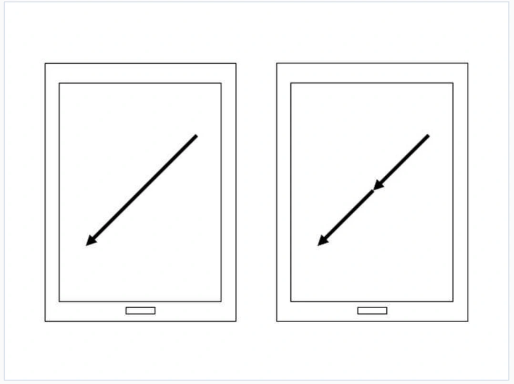

Patent / 10-1825829
Vector-based Gesture Unlock
A screen-unlocking method that recognizes a sequence of gesture directions, allowing the pattern to be entered at different positions on the screen.
- Type
- Patent
- Registration no.
- 10-1825829
- Registered title
- Apparatus and Method for Unlocking Screen of Terminal
- Registration record
- View on KIPRIS DOI
- Project status
- Registered concept
Recognizing direction across the screen
I proposed a screen-unlocking method based on the directions of a gesture. The person draws a sequence of movements, and the system compares their order and relative angles with a stored pattern.
Because the pattern is represented by direction vectors, it can be entered at different locations and scales. The concept addresses the need for precise targeting in a fixed point-based pattern, including situations involving one-handed input.
Proposed recognition process
Store a direction sequence
The unlock pattern is represented as a sequence of reference unit vectors.
Read the gesture
Touch coordinates are collected as the person drags a finger. Each segment is converted into a normalized direction vector.
Combine continuous directions
Consecutive drag segments in the same direction are merged, so a brief interruption does not necessarily create another input.
Compare the sequence
The vectors are compared with the stored pattern using an angular tolerance. A matching order and set of directions produces an unlock decision.
{kind=link}

Development direction
This is a registered unlocking-method concept. It explores how flexible gesture placement could support people who find fixed targets difficult to use.
An implemented system would need evaluation of recognition accuracy, error rates, and how well people remember their patterns. The angular tolerance is also a design parameter: allowing greater variation makes input more forgiving, while requiring closer matches makes patterns more specific.